Featured Temple
Featured Temple


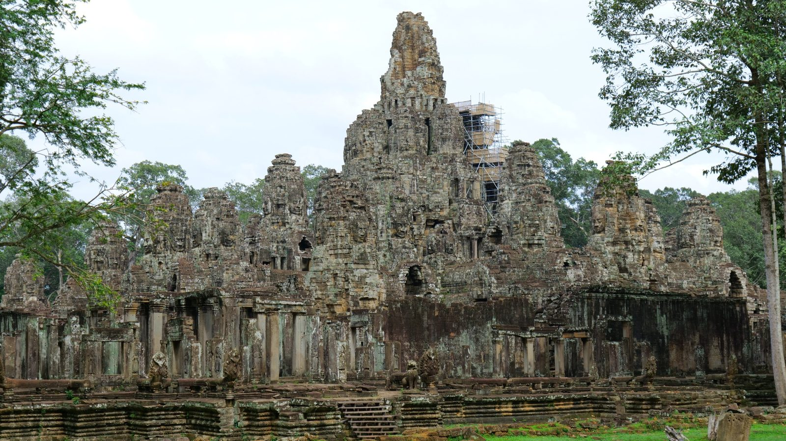

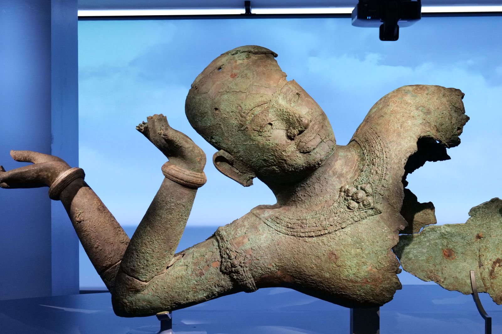
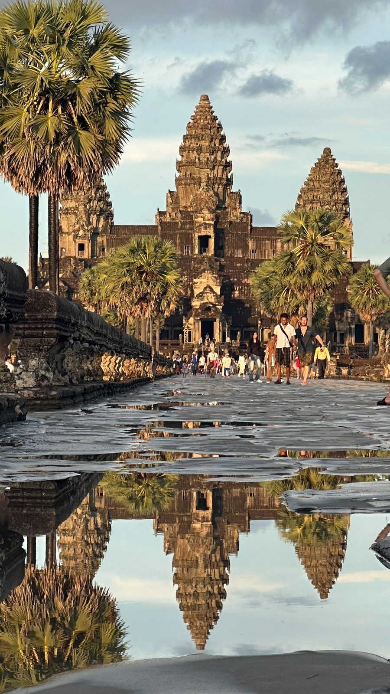
Get new temples, photos and travel stories from AngkorLens.
Temples, lake villages and museums through my lens
Khmer life collection
ជីវិតប្រចាំថ្ងៃរបស់ប្រជាជនខ្មែរ
Village houses, farm work, floating villages and family traditions, all together in one place. Tap a card to open its photos.
Where do you want to visit today?


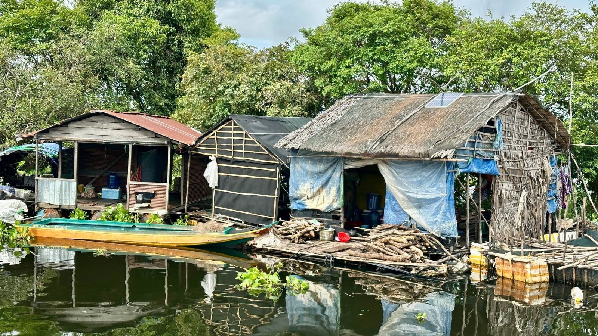
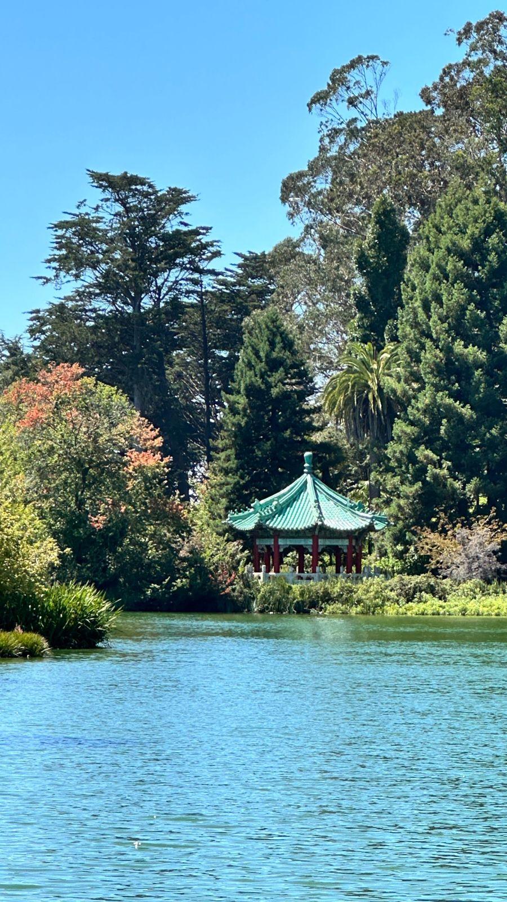
The collection · ទើបបន្ថែមថ្មី
ស្វែងរកបណ្តុំប្រាសាទរបស់យើង
From hidden brick towers in the forest to bridges and gates of the Khmer Empire, these are the newest temples I have photographed and written about. Each one has its history in English and Khmer, photos and a GPS map.
See all (2) · មើលទាំងអស់ Gate of the Deadខ្លោងទ្វារខ្មោចAngkor Thom, Siem Reap
Gate of the Deadខ្លោងទ្វារខ្មោចAngkor Thom, Siem ReapThe Gate of the Dead (ខ្លោងទ្វារខ្មោច), also recorded as Thvear Khmoch or Thvear Khnoch, is the east gate of Angkor Thom, one of the five gates through the city wall.
 Prasat Chrung Southeastប្រាសាទជ្រុង-អាគ្នេយ៍Siem Reap
Prasat Chrung Southeastប្រាសាទជ្រុង-អាគ្នេយ៍Siem ReapPrasat Chrung ("Shrine of the Angle" — chrung means corner) is the name of four small temples standing on the earth embankment at the four corners of…
 Ta Som Templeប្រាសាទតាសោមAngkor, Siem Reap
Ta Som Templeប្រាសាទតាសោមAngkor, Siem Reap Dei Chnang Gateខ្លោងទ្វារដីឆ្នាំងAngkor Thom, Siem Reap
Dei Chnang Gateខ្លោងទ្វារដីឆ្នាំងAngkor Thom, Siem Reap Kap Chen Templeប្រាសាទកាប់ចិនBoeng Mealea, Svay Leu, Siem Reap
Kap Chen Templeប្រាសាទកាប់ចិនBoeng Mealea, Svay Leu, Siem Reap Preah Ko Temple (Roluos)ប្រាសាទព្រះគោ (រលួស)Roluos, Siem Reap
Preah Ko Temple (Roluos)ប្រាសាទព្រះគោ (រលួស)Roluos, Siem Reap Banteay Kdei Templeប្រាសាទបន្ទាយក្តីAngkor, Siem Reap
Banteay Kdei Templeប្រាសាទបន្ទាយក្តីAngkor, Siem Reap Spean Yeay Poan (Ancient Bridge)ស្ពានយាយព័ន្ធToap Chey, Svay Leu, Siem Reap
Spean Yeay Poan (Ancient Bridge)ស្ពានយាយព័ន្ធToap Chey, Svay Leu, Siem Reap Spean Memay – Lbek (Bridge)ស្ពានមេម៉ាយ (ល្បើក)Near Lbek Village, Siem Reap
Spean Memay – Lbek (Bridge)ស្ពានមេម៉ាយ (ល្បើក)Near Lbek Village, Siem Reap Char Leu Templeប្រាសាទចារលើPreah Netr Preah, Banteay Meanchey
Char Leu Templeប្រាសាទចារលើPreah Netr Preah, Banteay Meanchey Spean Ta Ong (Bridge)ស្ពានតាអុងSiem Reap
Spean Ta Ong (Bridge)ស្ពានតាអុងSiem Reap Sampov Temple (Prasat Sampeou)ប្រាសាទសំពៅSiem Reap
Sampov Temple (Prasat Sampeou)ប្រាសាទសំពៅSiem Reap Koh Ho Temple (Prasat Koh Ko)ប្រាសាទកោះហូរSiem Reap
Koh Ho Temple (Prasat Koh Ko)ប្រាសាទកោះហូរSiem Reap Prasat Reangseiប្រាសាទរង្ស៉ីChi Kraeng, Siem Reap
Prasat Reangseiប្រាសាទរង្ស៉ីChi Kraeng, Siem Reap Ek Phnom Templeប្រាសាទ ឯកភ្នំBattambang Province
Ek Phnom Templeប្រាសាទ ឯកភ្នំBattambang Province Prasat Krovilប្រាសាទក្រវិលCambodia
Prasat Krovilប្រាសាទក្រវិលCambodia Tor Templeប្រាសាទទBanteay Srei District, Siem Reap
Tor Templeប្រាសាទទBanteay Srei District, Siem Reap Ta Prohm Kelប្រាសាទតាព្រហ្មកិលAngkor Wat, Siem Reap
Ta Prohm Kelប្រាសាទតាព្រហ្មកិលAngkor Wat, Siem Reap Ta Muong (Tro Moung) Templeប្រាសាទ ទ្រមូងKouk Chak, Siem Reap
Ta Muong (Tro Moung) Templeប្រាសាទ ទ្រមូងKouk Chak, Siem Reap Banan Templeប្រាសាទភ្នំបាណន់Battambang
Banan Templeប្រាសាទភ្នំបាណន់Battambang River of a Thousand Lingas (Phnom Kulen)លិង្គមួយពាន់ ភ្នំគូលែនPhnom Kulen, Siem Reap
River of a Thousand Lingas (Phnom Kulen)លិង្គមួយពាន់ ភ្នំគូលែនPhnom Kulen, Siem Reap Prasat Chrung Northeastប្រាសាទជ្រុង ឦសានSiem Reap
Prasat Chrung Northeastប្រាសាទជ្រុង ឦសានSiem Reap Ancient Royal Pond & Water System (Phimeanakas)ស្រះបុរាណ និងប្រព័ន្ធបង្ហូរទឹកសម័យអង្គរAngkor Thom
Ancient Royal Pond & Water System (Phimeanakas)ស្រះបុរាណ និងប្រព័ន្ធបង្ហូរទឹកសម័យអង្គរAngkor Thom Beng Mealea (Prasat Beng Mealea)ប្រាសាទបឹងមាលាSiem Reap
Beng Mealea (Prasat Beng Mealea)ប្រាសាទបឹងមាលាSiem Reap Kok Roka Temple (Hospital Chapel)ប្រាសាទគោករកាKampong Thom
Kok Roka Temple (Hospital Chapel)ប្រាសាទគោករកាKampong Thom Daun Troung Temple (Prasat Plang)ប្រាសាទដូនទ្រុងPuok District, Siem Reap
Daun Troung Temple (Prasat Plang)ប្រាសាទដូនទ្រុងPuok District, Siem Reap Prasat Leak Neang (Chapel of the Hospital)ប្រាសាទលាក់នាងAngkor Thom, Siem Reap
Prasat Leak Neang (Chapel of the Hospital)ប្រាសាទលាក់នាងAngkor Thom, Siem Reap Phnom Da Templeប្រាសាទភ្នំដាAngkor Borei, Takeo
Phnom Da Templeប្រាសាទភ្នំដាAngkor Borei, Takeo Banteay Thom Templeប្រាសាទបន្ទាយធំAngkor Thom, Siem Reap
Banteay Thom Templeប្រាសាទបន្ទាយធំAngkor Thom, Siem Reap Prasat Suor Prat N1 (1 of 12 Towers)ប្រាសាទ សួព្រ័ត្រខាងជើងAngkor Thom, Siem Reap
Prasat Suor Prat N1 (1 of 12 Towers)ប្រាសាទ សួព្រ័ត្រខាងជើងAngkor Thom, Siem Reap North Khleang (Prasat Khleang Khang Cheung)ប្រាសាទឃ្លាំងខាងជើងAngkor Thom, Siem Reap
North Khleang (Prasat Khleang Khang Cheung)ប្រាសាទឃ្លាំងខាងជើងAngkor Thom, Siem Reap Kandork Yeak Temple (Preah Pithu Y)ប្រាសាទកណ្តកយក្សAngkor Thom, Siem Reap
Kandork Yeak Temple (Preah Pithu Y)ប្រាសាទកណ្តកយក្សAngkor Thom, Siem Reap Daun Mea Temple (Preah Pithu V)ប្រាសាទដូនមារAngkor Thom, Siem Reap
Daun Mea Temple (Preah Pithu V)ប្រាសាទដូនមារAngkor Thom, Siem Reap Kor Sak Temple (Preah Pithu T)ប្រាសាទកោរសក់Angkor Thom, Siem Reap
Kor Sak Temple (Preah Pithu T)ប្រាសាទកោរសក់Angkor Thom, Siem Reap Prasat Kok Chakប្រាសាទគោកចកKouk Chak, Siem Reap
Prasat Kok Chakប្រាសាទគោកចកKouk Chak, Siem Reap Prasat Preah Phnomប្រាសាទព្រះភ្នំAngkor Chum, Siem Reap
Prasat Preah Phnomប្រាសាទព្រះភ្នំAngkor Chum, Siem Reap Spean Preah Chang'erស្ពានព្រះចង្អេរAngkor Chum, Siem Reap
Spean Preah Chang'erស្ពានព្រះចង្អេរAngkor Chum, Siem Reap Prasat Prohm Kelប្រាសាទព្រហ្មកិលChong Kal, Oddar Meanchey
Prasat Prohm Kelប្រាសាទព្រហ្មកិលChong Kal, Oddar Meanchey Spean Toapស្ពានទ័ពChong Kal, Oddar Meanchey
Spean Toapស្ពានទ័ពChong Kal, Oddar Meanchey Thma Dap Templeប្រាសាទថ្មដាប់Svay Leu, Siem Reap
Thma Dap Templeប្រាសាទថ្មដាប់Svay Leu, Siem Reap Tonle Snguot Templeប្រាសាទទន្លេស្ងួតNorth of Angkor Thom, Siem Reap
Tonle Snguot Templeប្រាសាទទន្លេស្ងួតNorth of Angkor Thom, Siem Reap Prasat Ta Dongប្រាសាទតាដុងSvay Leu, Siem Reap
Prasat Ta Dongប្រាសាទតាដុងSvay Leu, Siem ReapA beautiful collection of Khmer sculpture in San Francisco, and until January 25, 2027, home to the bronze Reclining Vishnu from the West Mebon.
See the collectionKhmer Heritage
AngkorLens focuses on Cambodia's wider Khmer heritage — including lesser-known temples, archaeological remains, inscriptions, architecture, and forest sites across Preah Vihear and beyond.
Featured Temple
Featured Temple
Featured Temple
Featured Temple
🇰🇭 អង្គរវត្តពេលថ្ងៃរះ — ប្រវត្តិសាស្ត្រ និងបទពិសោធន៍
អង្គរវត្តពេលថ្ងៃរះ គឺជាបទពិសោធន៍ដ៏គួរឱ្យចងចាំមួយនៅកម្ពុជា ដែលបញ្ចូលគ្នារវាងសម្រស់ធម្មជាតិ និងសំណង់បុរាណដ៏អស្ចារ្យមួយក្នុងចំណោមវិមានបុរាណដ៏ល្បីល្បាញបំផុតរបស់ពិភពលោក។ អង្គរវត្តស្ថិតនៅក្នុងឧទ្យានបុរាណវិទ្យាអង្គរ ជិតក្រុងសៀមរាប ប្រទេសកម្ពុជា។ ប្រាសាទនេះត្រូវបានសាងសង់ក្នុងរាជ្យព្រះបាទសូរ្យវរ្ម័នទី២ នៅដើមសតវត្សទី១២ ដើមឡើយជាប្រាសាទហិណ្ឌូឧទ្ទិសដល់ព្រះវិស្ណុ។
នៅពេលថ្ងៃរះ អ្នកទស្សនាជាច្រើនតែងប្រមូលផ្តុំគ្នានៅជុំវិញស្រះទឹកខាងមុខអង្គរវត្ត ដើម្បីទស្សនាពន្លឺដំបូងដែលលេចឡើងពីខាងក្រោយកំពូលប្រាង្គទាំងប្រាំដ៏ល្បីល្បាញ។ នៅពេលអាកាសធាតុអំណោយផល កំពូលប្រាង្គ និងស្រមោលឆ្លុះរបស់វាអាចលេចឡើងលើផ្ទៃទឹក បង្កើតជាទេសភាពមួយក្នុងចំណោមទេសភាពដែលគេស្គាល់ច្បាស់បំផុតរបស់កម្ពុជា។ ពណ៌មេឃផ្លាស់ប្តូរបន្តិចម្តងៗ ហើយបំភ្លឺប្រាង្គថ្មភក់ និងថែវ ដោយបង្ហាញលម្អិតនៃស្ថាបត្យកម្មដ៏ធំសម្បើមរបស់ប្រាសាទ។
ការបែរទិសរបស់អង្គរវត្តទៅខាងលិច គឺជាលក្ខណៈមិនសូវធម្មតាសម្រាប់ប្រាសាទខ្មែរធំៗមួយចំនួន ទោះបីច្រកចូលសំខាន់ និងផ្លូវថ្មត្រូវបានចូលពីខាងលិចក៏ដោយ។ ប្រាសាទត្រូវបានព័ទ្ធជុំវិញដោយគូទឹកដ៏ធំ និងបរិវេណខាងក្រៅ ខណៈប្រាង្គកណ្តាលលេចខ្ពស់លើថែវ និងជាន់រាបជាបន្តបន្ទាប់។ ប្រាង្គទាំងប្រាំតំណាងឱ្យកំពូលភ្នំព្រះមេរុ ដែលជាភ្នំស័ក្តិសិទ្ធិក្នុងទស្សនៈព្រហ្មញ្ញសាសនា។
ថ្ងៃរះក៏ផ្តល់ឱកាសដ៏ស្ងប់ស្ងាត់មួយសម្រាប់អ្នកទស្សនា ក្នុងការសង្កេតទំហំ និងសមាមាត្ររបស់អង្គរវត្ត មុនពេលអាកាសធាតុក្តៅ និងមានអ្នកទស្សនាច្រើននៅពេលថ្ងៃ។ ស្រះទឹកឆ្លុះ ដើមត្នោត ផ្លូវថ្ម និងស្រមោលប្រាសាទ បង្កើតជាទេសភាពដែលភ្ជាប់បរិស្ថានធម្មជាតិរបស់កម្ពុជា ជាមួយបេតិកភណ្ឌស្ថាបត្យកម្មបុរាណ។
សព្វថ្ងៃ អង្គរវត្តពេលថ្ងៃរះគឺជាផ្នែកសំខាន់មួយនៃបទពិសោធន៍របស់អ្នកទស្សនានៅតំបន់អង្គរ។ លើសពីការថតរូប វាផ្តល់ឱកាសឱ្យមនុស្សបានសង្កេត និងកោតសរសើរចំពោះវិស្វកម្ម ជំនឿសាសនា ស្នាដៃសិល្បៈ និងកេរដំណែលប្រវត្តិសាស្ត្ររបស់អាណាចក្រខ្មែរ។ នៅពេលពន្លឺថ្ងៃរាលដាលលើប្រាសាទ ព័ត៌មានលម្អិតនៃចម្លាក់ និងថែវកាន់តែច្បាស់ឡើង ហើយរំលឹកអ្នកទស្សនាថា អង្គរវត្តនៅតែជាសម្បត្តិបេតិកភណ្ឌវប្បធម៌ដ៏សំខាន់បំផុតមួយរបស់កម្ពុជា។
🇬🇧 Angkor Wat Sunrise — History and Experience
Angkor Wat sunrise is one of the most memorable experiences in Cambodia, bringing together the beauty of the natural landscape with one of the world's greatest ancient monuments. Angkor Wat is located in the Angkor Archaeological Park, near Siem Reap, Cambodia. The temple was constructed during the reign of King Suryavarman II in the early 12th century, originally as a Hindu temple dedicated to Vishnu.
At sunrise, visitors traditionally gather around the ponds in front of Angkor Wat to watch the first light appear behind the temple's famous five towers. When the weather is clear, the towers and their reflections can appear on the surface of the water, creating one of the most recognizable views of Cambodia. The changing colors of the sky gradually illuminate the sandstone towers and galleries, revealing details of the temple's enormous architectural design.
The orientation of Angkor Wat toward the west is unusual among major Khmer temples, although the monument's main entrance and causeway are approached from the west. The temple complex is surrounded by a massive moat and an outer enclosure, while the central sanctuary rises above a series of galleries and terraces. The five towers represent the peaks of Mount Meru, the sacred mountain of Hindu cosmology.
Sunrise also provides a peaceful opportunity to appreciate the scale and symmetry of Angkor Wat before the daytime heat and larger crowds arrive. The reflection pools, palm trees, stone causeway, and silhouette of the temple create a landscape that connects Cambodia's natural environment with its ancient architectural heritage.
Today, Angkor Wat sunrise is an important part of the visitor experience at Angkor. Beyond photography, it offers a moment to appreciate the engineering, religious beliefs, artistic achievements, and historical legacy of the Khmer Empire. As daylight spreads across the monument, the details of its carvings and galleries become increasingly visible, reminding visitors why Angkor Wat remains one of Cambodia's most important cultural treasures.
Viking — A New View Every Day
Each day brings a new destination to explore.
40 sunrise photographs.
អង្គរវត្តត្រូវបានសាងសង់នៅដើមសតវត្សទី១២ ក្នុងរាជកាលព្រះបាទសូរ្យវរ្ម័នទី២ ហើយដើមឡើយជាប្រាសាទហិណ្ឌូដែលឧទ្ទិសជាចម្បងដល់ព្រះវិស្ណុ។ វិមានដ៏ធំនេះមានវិចិត្រសាលជាច្រើន ទីធ្លា ជណ្ដើរ ប្រាង្គ និងសំណង់ផ្សេងៗ ដែលរៀបចំឡើងជុំវិញទីសក្ការៈកណ្ដាល។
ការមើលពីក្នុងវិចិត្រសាលអនុញ្ញាតឱ្យអ្នកទស្សនាមើលឃើញរបៀបដែលស្ថាបត្យករខ្មែរបុរាណបានរៀបចំសំណង់យ៉ាងមានរបៀបរៀបរយ។ ច្រកទ្វារថ្មបង្កើតជាស៊ុមធម្មជាតិជុំវិញប្រាង្គកណ្ដាល ហើយវិចិត្រសាលនាំទស្សនៈទៅកាន់ប្រាង្គទាំងប្រាំ ដែលតំណាងឱ្យភ្នំព្រះសុមេរុក្នុងជំនឿសាសនាហិណ្ឌូ។
វិចិត្រសាលក៏មានចម្លាក់បាស្រែលីហ្វដ៏ល្បីល្បាញ ដែលបង្ហាញរឿងព្រេងសាសនា ប្រវត្តិសាស្ត្រ និងជីវិតក្នុងសង្គមខ្មែរបុរាណ។
រូបថតនេះបង្ហាញពីភាពស៊ីមេទ្រី ជម្រៅ និងទំហំដ៏ធំសម្បើមរបស់អង្គរវត្ត និងជួយឱ្យអ្នកទស្សនាយល់ថា អង្គរវត្តមិនមែនមានតែប្រាង្គខាងក្រៅប៉ុណ្ណោះទេ ប៉ុន្តែជាសំណង់សក្ការៈដ៏ស្មុគស្មាញដែលត្រូវបានរៀបចំយ៉ាងប្រុងប្រយ័ត្ន។
Angkor Wat was built during the reign of King Suryavarman II in the early 12th century, originally as a Hindu temple dedicated primarily to Vishnu. The monument was designed on a grand scale, with a series of galleries, courtyards, terraces, towers, and entrance structures arranged around a central sanctuary.
From inside the gallery, visitors can see how carefully the ancient Khmer architects organized the temple's spaces. The stone doorway creates a natural frame around the central sanctuary, while the long galleries guide the eye toward the five towers. The central towers symbolize the sacred Mount Meru, which was believed in Hindu cosmology to be the center of the universe.
The galleries themselves are an important part of Angkor Wat's artistic heritage. Their walls contain extensive bas-reliefs depicting scenes from Hindu mythology, historical events, and the royal world of the Khmer Empire. Walking through these galleries allows visitors to experience the monument not simply as a collection of towers, but as a carefully planned sacred complex.
The large grassy courtyard visible from this viewpoint also demonstrates the enormous scale of the temple. The combination of sandstone architecture, open space, light, and surrounding vegetation creates a peaceful atmosphere within the ancient monument.
Today, views such as this help visitors appreciate the architectural planning and craftsmanship of Angkor Wat. The photograph records a quiet moment inside the temple while showing the remarkable symmetry, depth, and monumental scale created by Khmer builders more than eight centuries ago.
13 photographs.
រាមកេរ្តិ៍ គឺជាវីររឿងដ៏សំខាន់មួយក្នុងបេតិកភណ្ឌអក្សរសិល្ប៍ និងសិល្បៈខ្មែរ។ វាមានទំនាក់ទំនងជាមួយរឿងរាមាយណៈ ប៉ុន្តែប្រពៃណីខ្មែរបានបកស្រាយ កែសម្រួល និងបន្ថែមអន្លើតួអង្គ និងទស្សនៈដែលមានលក្ខណៈផ្ទាល់ខ្លួន។ ដូច្នេះ រាមកេរ្តិ៍មិនគួរត្រូវបានយល់ថាជាការចម្លងរឿងឥណ្ឌាទាំងស្រុងឡើយ។ វាបានរស់នៅតាមរយៈអក្សរសិល្ប៍ ការសម្តែងល្ខោនខោល របាំ ស្បែកធំ ចម្លាក់ និងគំនូរជញ្ជាំង ហើយបានក្លាយជាផ្នែកមួយនៃការចងចាំវប្បធម៌ខ្មែរ។
ថែវជុំវិញព្រះវិហារព្រះកែវមរកត ក្នុងព្រះបរមរាជវាំងចតុម្មុខមង្គល រាជធានីភ្នំពេញ គឺជាកន្លែងសំខាន់មួយសម្រាប់សិក្សាពីការបង្ហាញរាមកេរ្តិ៍តាមរយៈគំនូរជញ្ជាំង។ ប្រភព AMS Khmer Civilization ពិពណ៌នាថា ថែវមានប្រវែងប្រហែល ៦៤២ ម៉ែត្រ ហើយគំនូររាមកេរ្តិ៍ព័ទ្ធជុំវិញជញ្ជាំងទាំងបួនទិស។ ឯកសារមួយដែលបានលើកឡើងដោយប្រភពនោះ រាប់បាន ១៩២ វគ្គ និងមានចំណងជើងឈុតរហូតដល់ ៥១១ ចំណងជើង។ ចំនួនទាំងនេះជាការរាប់តាមឯកសារផ្សេងៗ ហើយអាចខុសគ្នាតាមវិធីកំណត់ថាជា “វគ្គ” ឬ “ចំណងជើង”។
ប្រភពសិក្សាផ្សេងទៀតរាយការណ៍ថា គំនូរត្រូវបានបង្កើតក្នុងឆ្នាំ ១៩០៣–១៩០៤ ហើយពាក់ព័ន្ធនឹងក្រុមវិចិត្រករខ្មែរប្រមាណ ៤០ នាក់។ ឈ្មោះឧកញ៉ាទេពនិម្មិត ម៉ក់ ត្រូវបានភ្ជាប់យ៉ាងជិតស្និទ្ធជាមួយការដឹកនាំសាលាសិល្បៈ និងការងារគំនូរនេះ។ ប្រភព Archivision ក៏រាយការណ៍ថា គម្រោងនេះមានវិចិត្រករ Vichitre Chea និងឧកញ៉ាទេពនិម្មិតជាអ្នកដឹកនាំសិល្បៈ និងស្ថាបត្យកម្ម។ ដោយសារប្រភពផ្សេងៗប្រើការសរសេរឈ្មោះខុសគ្នា AngkorLens រក្សាឈ្មោះតាមទម្រង់ដែលប្រភពនីមួយៗបានប្រើ។
រឿងដែលគំនូរបង្ហាញមានព្រះរាម ព្រះនាងសីតា ព្រះលក្ស្មណ៍ ហនុមាន រាពណ៍ និងតួអង្គជាច្រើនទៀត។ ដំណើររឿងត្រូវបានបង្ហាញជាបន្តបន្ទាប់ជុំវិញថែវ ដូច្នេះការដើរមើលតាមជញ្ជាំងអាចធ្វើឱ្យអ្នកទស្សនាមានអារម្មណ៍ដូចជាកំពុងដើរតាមសាច់រឿងមួយដ៏វែង។ ប្រភពមួយពិពណ៌នាថា រឿងចាប់ផ្តើមពីថែវខាងកើតផ្នែកខាងត្បូង ហើយបន្តព័ទ្ធជុំវិញបរិវេណទាំងមូល។
លក្ខណៈសិល្បៈរបស់គំនូរមានសារៈសំខាន់ជាពិសេស។ AMS Khmer Civilization កត់សម្គាល់ការប្រើពណ៌ជាអត្តសញ្ញាណសម្រាប់តួអង្គ ដូចជា ព្រះរាមពណ៌បៃតង ព្រះលក្ស្មណ៍ពណ៌សាច់ ហនុមានពណ៌ស និងអង្គទពណ៌បៃតងខ្ចីកាត់ខ្មៅ ឬបៃតងចាស់។ ការប្រើពណ៌បែបនេះជួយឱ្យអ្នកទស្សនាស្គាល់តួអង្គនៅក្នុងឈុតដែលមានមនុស្ស និងសកម្មភាពជាច្រើន។
គំនូរទាំងនេះក៏បង្ហាញពីវិធីដែលសិល្បករខ្មែរបានបញ្ចូលទេសភាព ស្ថាបត្យកម្ម សម្លៀកបំពាក់ និងសកម្មភាពរបស់មនុស្សទៅក្នុងសាច់រឿង។ Archivision កត់សម្គាល់ថា អគារនៅក្នុងគំនូរមួយចំនួនត្រូវបានបង្ហាញតាមទម្រង់ isometric និងមានមាត្រដ្ឋានខុសពីតួអង្គ ខណៈទេសភាពត្រូវបានប្រើដើម្បីបង្កើតអារម្មណ៍នៃទីកន្លែង និងបរិយាកាស។ នេះធ្វើឱ្យគំនូរមិនមែនមានតួនាទីជាការនិទានរឿងតែប៉ុណ្ណោះទេ ប៉ុន្តែក៏ជាឯកសារសំខាន់សម្រាប់សិក្សាអំពីការគិត និងភាសារូបភាពរបស់សិល្បៈខ្មែរនៅដើមសតវត្សទី២០ផងដែរ។
សារៈសំខាន់មួយទៀតគឺការរួមរស់រវាងប្រធានបទដែលមានប្រភពព្រហ្មញ្ញសាសនា និងទីកន្លែងដែលមានតួនាទីជាព្រះវិហារព្រះពុទ្ធសាសនា។ ប្រភព Archivision ពន្យល់ថា ប្រធានបទព្រះរាមនៅតែមានកន្លែងក្នុងពិធីរាជការ និងសិល្បៈរាជវាំង ហើយការបង្ហាញរឿងរាមកេរ្តិ៍នៅក្នុងបរិវេណព្រះវិហារមិនត្រូវបានចាត់ទុកថាផ្ទុយពីបរិបទព្រះពុទ្ធសាសនាឡើយ។ នេះបង្ហាញពីការបន្ត និងការបញ្ចូលគ្នារវាងប្រពៃណីសិល្បៈ និងជំនឿជាច្រើននៅក្នុងសង្គមខ្មែរ។
សព្វថ្ងៃ គំនូរទាំងនេះក៏មានតម្លៃជាឯកសារបេតិកភណ្ឌដែលត្រូវការការថែរក្សា ព្រោះជញ្ជាំងបើកទទួលអាកាសធាតុ និងគំនូរមួយចំនួនរងការខូចខាតតាមពេលវេលា។ ប្រភព Archivision រាយការណ៍ពីការខូចខាតដោយអាកាសធាតុ ហើយក៏មានប្រវត្តិនៃកិច្ចខិតខំអភិរក្សជាបន្តបន្ទាប់។ ដូច្នេះ ការថតរូប និងការរៀបចំឯកសាររូបភាពដែលមានលេខ និងលំដាប់ច្បាស់លាស់ អាចជួយរក្សាទុកជាកំណត់ត្រាសម្រាប់ការសិក្សា និងការយល់ដឹងរបស់មនុស្សជំនាន់ក្រោយ។
The Reamker is one of Cambodia’s major epic traditions in literature, visual art, and performance. It is related to the Indian Ramayana, but the Khmer tradition developed its own interpretations, episodes, character treatments, and cultural meanings. For that reason, the Reamker should not be treated simply as a direct copy of the Indian epic. It has lived through Khmer literature, masked theatre, dance, large shadow puppetry, sculpture, and mural painting, becoming part of Cambodia’s long cultural memory.
The cloister surrounding the Preah Vihear Preah Keo Morakot, commonly known in English as the Silver Pagoda, within the Royal Palace compound in Phnom Penh is one of the most important places for studying the visual presentation of the Reamker. AMS Khmer Civilization describes a cloister of roughly 642 metres around the four sides and reports, from a written record cited in its study, 192 sections and as many as 511 individual titles for the mural sequence. These counts reflect different ways of dividing the narrative into sections and titles and should therefore be understood as source-dependent rather than as a single universally fixed count.
Sources date the mural project to 1903–1904 and associate it with a team of about 40 Cambodian artists. The name Oknha Tep Nimit Mak is closely associated with the leadership of the artistic project. Archivision records the murals as the work of a team of students from 1903–1904 under the supervision of the artist Vichitre Chea and architect Oknha Tep Nimit Thneak. Because published sources use somewhat different spellings and descriptions of the names and roles, AngkorLens keeps those differences visible rather than silently combining them into one version.
The painted narrative includes Preah Ream, Sita, Preah Leak, Hanuman, Reap (Ravana), and many other characters and episodes. The story unfolds around the cloister, so moving along the walls allows viewers to experience the mural as a continuous visual narrative. One description says the sequence begins at the eastern gallery on the southern side and continues around the entire complex.
The artistic language of the murals is especially important. AMS Khmer Civilization notes the use of colour as a visual identity for major characters: Preah Ream is associated with green, Preah Leak with a flesh-colour tone, Hanuman with white, and Angkath with a lighter green combined with black or dark green. Such colour conventions help viewers distinguish characters in crowded narrative scenes.
The paintings also combine narrative scenes with landscapes, architecture, clothing, and human activity. Archivision notes that buildings may be shown with an isometric type of projection and with a scale different from the figures, while landscape passages are used to establish place and atmosphere. The murals therefore function not only as illustrations of a long story but also as an important record of the visual language of Cambodian art in the early twentieth century.
The murals are also significant because they place a story with Brahmanic origins within a royal Buddhist setting. Archivision explains that the Reamker continued to have a role in court ceremonies and royal performance traditions, and that its presence in a Buddhist worship context was not considered incompatible with local religious and artistic practice. This provides an important example of how different strands of Cambodian cultural tradition could coexist and interact.
Today the murals are also a conservation record. The paintings are exposed to environmental conditions, and some portions have suffered weather-related deterioration. Archivision documents damaged areas and a history of conservation efforts. Careful photography and organized digital documentation can therefore serve as a useful record for study, interpretation, and future generations, while the physical paintings remain part of the living heritage of the Royal Palace complex.
179 photographs identified from your three uploaded folder screenshots.

ទីតាំង និងប្រវត្តិ៖ ប្រាសាទប្រាំ គឺជាប្រាសាទបុរាណខ្មែរមួយ ស្ថិតនៅជិតផ្លូវជាតិលេខ ៦៤ ក្នុងតំបន់ព្រំប្រទល់ ខេត្តសៀមរាប និងខេត្តព្រះវិហារ។

ទីតាំង និងប្រវត្តិ៖ ប្រាសាទប្រាំ គឺជាប្រាសាទបុរាណស្ថិតនៅក្នុងតំបន់កោះកេរ ដែលជាមជ្ឈមណ្ឌលរាជវាំង និងសាសនាដ៏សំខាន់របស់ខ្មែរនៅសតវត្សរ៍ទី១០។ ប្រាសាទនេះជាផ្នែកមួយនៃទេសភាពបុរាណវិទ្យាដ៏ធំ ដែលរួមមានប្រាសាទជាច្រើន អាងទឹក ផ្លូវបុរាណ និងសំណង់សាសនាផ្សេងៗ។

សារៈសំខាន់៖ ជាក្រុមប្រាសាទ និងទីក្រុងបុរាណដ៏ធំ ដែលរួមបញ្ចូលសាសនា ផ្លូវបុរាណ ប្រព័ន្ធទឹក និងសកម្មភាពផលិតដែកក្នុងសម័យអង្គរ។
ភាពលាក់ខ្លួន៖ ប្រាសាទបុរាណសម័យអង្គរដែលស្ថិតនៅក្នុងបរិស្ថានធម្មជាតិ និងមានបរិយាកាសស្ងប់ស្ងាត់នៅតំបន់ព្រះវិហារ។

ប្រវត្តិ និងទីតាំង៖ ប្រាសាទបុរាណសម័យអង្គរដ៏ស្ងាត់ស្ងាត់ ស្ថិតក្នុងតំបន់ជនបទនៃខេត្តព្រះវិហារ និងក្នុងបណ្តុំតំបន់បុរាណជុំវិញកោះកែរ។

ទីតាំង និងប្រវត្តិ៖ ប្រាសាទបុរាណស្ថិតក្នុងស្រុកត្រពាំងប្រាសាទ ខេត្តឧត្តរមានជ័យ និងជាផ្នែកមួយនៃបេតិកភណ្ឌស្ថាបត្យកម្មខ្មែរបុរាណ។

ទីតាំង និងបរិបទ៖ ប្រាសាទបុរាណស្ថិតនៅជិតប្រាសាទត្រពាំងប្រាសាទធំ ក្នុងស្រុកត្រពាំងប្រាសាទ ខេត្តឧត្តរមានជ័យ និងជាផ្នែកមួយនៃបេតិកភណ្ឌស្ថាបត្យកម្មខ្មែរសម័យអង្គរ។

ទីតាំង និងប្រវត្តិ៖ បូជនីយដ្ឋានបុរាណស្ថិតក្នុងខេត្តព្រះវិហារ និងជាផ្នែកមួយនៃបរិបទផ្លូវ និងបេតិកភណ្ឌស្ថាបត្យកម្មខ្មែរបុរាណ។
បេតិកភណ្ឌពិភពលោក (UNESCO)៖ ប្រាសាទព្រះវិហារ មានប្រវត្តិសាស្ត្រចាប់ពីសតវត្សរ៍ទី៩ និងបណ្តុំសំណង់សំខាន់មានការអភិវឌ្ឍខ្លាំងនៅសតវត្សរ៍ទី១១–១២ លើជួរភ្នំដងរែក។

ទីតាំង និងប្រវត្តិ៖ ប្រាសាទឆ្អេះ ជាបុរាណស្ថានសម័យអង្គរ ស្ថិតនៅភូមិឆ្អេះ ឃុំទឹកក្រហម ស្រុកជាំក្សាន្ត ខេត្តព្រះវិហារ ដែលមានសំណង់ឥដ្ឋ តួសក្ការៈកណ្តាល សំណង់រងពីរ និងកំផែងព័ទ្ធជុំវិញ។

ទីតាំង និងប្រវត្តិ៖ ប្រាសាទ សួរម៉ាប់ គឺជាបុរាណស្ថានខ្មែរបុរាណក្នុងតំបន់ព្រះវិហារ ដែលស្ថិតក្នុងបរិបទបុរាណស្ថានសម័យអង្គរ និងមានតម្លៃសម្រាប់ការសិក្សាប្រវត្តិសាស្ត្រ និងស្ថាបត្យកម្មខ្មែរបុរាណ។

ទីតាំង និងប្រវត្តិ៖ ប្រាសាទគុក ប្រុស ជាបុរាណស្ថានខ្មែរបុរាណក្នុងតំបន់ព្រះវិហារ ដែលមានតម្លៃសម្រាប់ការសិក្សាប្រវត្តិសាស្ត្រ ស្ថាបត្យកម្ម និងបេតិកភណ្ឌវប្បធម៌ក្នុងតំបន់។

ទីតាំង និងប្រវត្តិ៖ ប្រាសាទកុកស្រី ជាសំណង់បុរាណដ៏ចម្លែកនៅតំបន់អ្នកបួស ខេត្តព្រះវិហារ ដែលមានប្លង់រាងអក្សរ U និងសំណង់ជួរសសរដ៏គួរឱ្យចាប់អារម្មណ៍។

ទីតាំង និងប្រវត្តិ៖ ប្រាសាទអ្នកបួស ជាបុរាណដ្ឋានសំខាន់នៅស្រុកជាំក្សាន្ត ខេត្តព្រះវិហារ ដែលមានប្រវត្តិសាស្ត្រច្រើនស្រទាប់ និងសិលាចារឹកពីសម័យផ្សេងៗ។

ទីតាំង និងប្រវត្តិ៖ ប្រាសាទសីម៉ា ជាបុរាណដ្ឋានមួយនៅតំបន់ស្រុកជាំក្សាន្ត ខេត្តព្រះវិហារ ដែលស្ថិតក្នុងទេសភាពបុរាណដ៏សម្បូរបែបនៅជិតប្រាសាទសួរម៉ាប់ និងអ្នកបួស។

ទីតាំង និងប្រវត្តិ៖ ប្រាសាទស្នែងក្របីត្បូង ស្ថិតនៅតំបន់ជាំក្សាន្ត ខេត្តព្រះវិហារ និងមានសំណង់ប៉មឥដ្ឋបី រៀបតាមអ័ក្សជើង–ត្បូង និងបើកទៅទិសខាងកើត។

ទីតាំង និងប្រវត្តិ៖ ប្រាសាទស្នែងក្របីខាងជើង គឺជាប្រាសាទសម័យអង្គរនៅស្រុកជាំក្សាន្ត ខេត្តព្រះវិហារ ដែលមានប្រាង្គថ្មភក់ចំនួនបី និងមានលក្ខណៈពិសេសដោយសារ សំណង់ត្រូវបានទុកមិនទាន់សាងសង់រួច។

ទីតាំង និងប្រវត្តិ៖ ប្រាសាទត្រាំប្រាល គឺជាបុរាណដ្ឋានសម័យអង្គរនៅឃុំទឹកក្រហម ស្រុកជាំក្សាន្ត ខេត្តព្រះវិហារ ជិតជើងភ្នំសាំប៉ាដ៊ូ និងជាផ្នែកមួយនៃទេសភាពបុរាណដ៏សម្បូរបែបរបស់តំបន់នេះ។

ទីតាំង និងប្រវត្តិ៖ ប្រាសាទក្រពុំឈូក ឬប្រាសាទខ្នារ ជាប្រាសាទដែលត្រូវបានភ្ជាប់ជាមួយបណ្តាញហោរបន់ស្រន់នៃមន្ទីរពេទ្យសម័យព្រះបាទជ័យវរ្ម័នទី៧ នៅចុងសតវត្សរ៍ទី១២ និងដើមសតវត្សរ៍ទី១៣ ស្ថិតក្នុងស្រុករវៀង ខេត្តព្រះវិហារ។

ទីតាំង និងការអភិរក្ស៖ ប្រាសាទខ្នារផ្ទោល ស្ថិតនៅឃុំស្រែណូយ ស្រុកវ៉ារិន ខេត្តសៀមរាប និងជាប្រាសាទឥដ្ឋ-ថ្មបាយក្រៀមដែលទទួលការងារសង្គ្រោះ និងអភិរក្សពីអាជ្ញាធរជាតិអប្សរា។

ទីតាំង និងប្រវត្តិ៖ ប្រាសាទធ្មមពាំង ស្ថិតនៅភូមិវាលធំ ឃុំរំដោះស្រែ ស្រុកជាំក្សាន្ត ខេត្តព្រះវិហារ។ ជាប្រាសាទបុរាណមានស្នូលសំណង់ឥដ្ឋ និងថ្មភក់ កំពែងថ្មបាយក្រៀម គោបុរៈខាងកើត និងប្រឡាយ/អាងទឹកជុំវិញកំពែង។

ទីតាំង និងប្រវត្តិ៖ ប្រាសាទត្រពាំងថ្នល់ឈូក ស្ថិតនៅភូមិអូខ្សាន ឃុំទឹកក្រហម ស្រុកជាំក្សាន្ត ខេត្តព្រះវិហារ។ ប្រាសាទមានសំណង់ឥដ្ឋ ៥ រៀបតាមអ័ក្សជើង-ត្បូង និងមានសិលាចារឹក K.350 និង K.351។ K.351 មានកាលបរិច្ឆេទឆ្នាំ ៩៩២ គ.ស. និងរៀបរាប់អំពីការបរិច្ចាគទៅកាន់ព្រះនារាយណ៍។

ទីតាំង និងប្រវត្តិ៖ ប្រាសាទសម័យអង្គរនៅតំបន់ភ្នំ ស្រុកគូលែន ខេត្តព្រះវិហារ មានសំណង់ឥដ្ឋជាច្រើន និងសិលាចារឹកសំខាន់ៗ K.190–K.195 ដែលផ្តល់ព័ត៌មានអំពីប្រវត្តិ សាសនា និងការគ្រប់គ្រងស្ថាប័នប្រាសាទ។

ទីតាំង និងប្រវត្តិ៖ ប្រាសាទភ្នំព្រះទេវៈ ឬ ប្រាសាទភ្នំវាក់ ជាបុរាណដ្ឋានលើជម្រាលភ្នំក្នុងស្រុកបន្ទាយស្រី ខេត្តសៀមរាប ដែលទំនងមានដើមកំណើតនៅចុងសតវត្សរ៍ទី៩ ឬដើមសតវត្សរ៍ទី១០ និងមានការកែច្នៃបន្ថែមនៅសម័យក្រោយ។

ទីតាំង និងប្រវត្តិ៖ ប្រាសាទសង្កែសឹង្ហ ជាបុរាណដ្ឋានសម័យអង្គរនៅស្រុកស្វាយលើ ខេត្តសៀមរាប ដែលមានប្រាង្គសំខាន់ចំនួន៤ រួមមានប្រាង្គឥដ្ឋបីនៅជួរមុខ និងសំណង់ខាងក្រោយដែលប្រើឥដ្ឋ ថ្មភក់ និងថ្មបាយក្រៀម។

ទីតាំង និងប្រវត្តិ៖ ប្រាសាទបុរាណស្ថិតប្រហែល ៥ គីឡូម៉ែត្រភាគនិរតីពីបេងមាលា ដែលទំនងជាស្ថិតនៅចុងសតវត្សរ៍ទី១០ ដល់សតវត្សរ៍ទី១១ និងមានសំណង់ថ្មភក់បីប៉មរៀបតាមអ័ក្សជើង–ត្បូង។
Explore 37 ancient Khmer sites photographed by AngkorLens — from famous monuments to quiet forest sanctuaries few visitors ever reach.

01 · Heritage Site
ប្រាសាទនាងខ្មៅ
Prasat Neang Khmau means “Dark Skin Lady” and is named for the dark bluish laterite of the monument. Angkor Enterprise dates its construction to 921–928 CE.

02 · Heritage Site
ប្រាសាទចាម
Prasat Cham is a sandstone temple on the western side of the Preah Khan Kampong Svay (Bakan) archaeological area in Preah Vihear Province, surrounded by a laterite enclosure wall.

03 · Heritage Site
ស្ពានអូរសេះស្លាប់
O Sae Slat Bridge is an ancient Khmer stone bridge near Beng Mealea, part of the old royal road network that linked Angkor with Beng Mealea and Preah Khan Kampong Svay.

04 · Heritage Site
វត្តប្រាសាទ
Wat Prasat, also known as Prasat Sek Ta Tuy, is a brick sanctuary southwest of Beng Mealea in Siem Reap Province, whose inscriptions mention the royal guru Yajnavaraha.

05 · Heritage Site
ប្រាសាទភ្នំទំព័រ
Phnom Tompon is a quiet forest ruin in northern Siem Reap Province, where large stone blocks, doorways and tree roots create a striking blend of ancient architecture and nature.

06 · Heritage Site
ប្រាសាទប្រាំ · កោះកេរ
Prasat Pram is one of the temple complexes of Koh Ker. Its name means “Five Temples,” and it was built in the early 10th century when King Jayavarman IV made Koh Ker the capital of the Khmer Empire.

07 · Heritage Site
ប្រាសាទប្រាំ តំបន់ព្រំប្រទល់សៀមរាប–ព្រះវិហារ
A remote Prasat Pram site on the Siem Reap–Preah Vihear border landscape, part of the wider network of Khmer monuments and ancient travel routes beyond the main Angkor temples.
08 · Heritage Site
ប្រាសាទព្រះខ័នកំពង់ស្វាយ
Preah Khan Kampong Svay, also known as Bakan, was a major Angkorian complex and an important way station on the ancient Royal Road east of Angkor.

09 · Heritage Site
រានប្រាសាទព្រះស្ទឹង
The terrace of Preah Stoeng belongs to the Preah Khan Kampong Svay landscape, where Bayon-style faces and finely carved hamsa motifs mark a distinctive late-Angkorian artistic tradition.

10 · Heritage Site
មេបុនព្រះខ័នកំពង់ស្វាយ
This Mebon stands within the great baray of Preah Khan Kampong Svay, a striking example of how Khmer temple planning combined sacred architecture with monumental waterworks.

11 · Heritage Site
អ្នកតាត្រចៀកធំ
Nakta Tracheak Thom preserves the living spiritual side of Cambodia's heritage, where an ancient landscape can remain meaningful through local beliefs and community traditions.

12 · Heritage Site
ព្រះធាតុខ្វាន់ពីរ
Preah Theat Khvan Pir is an early Khmer brick sanctuary in Kratie, known for two east-facing shrines and an early-8th-century inscription.

13 · Heritage Site
ប្រាសាទហាន់ជ័យជើង
Han Chey North Temple is an important pre-Angkorian sandstone sanctuary within the ancient temple group of Phnom Han Chey in Kampong Cham, oriented east toward the Mekong River.

14 · Heritage Site
ស្រះដំរី
Srah Damrei is a remarkable rock-carving site on Phnom Kulen, famous for monumental sandstone animals including an elephant, lions and a large frog.

15 · Heritage Site
ប្រាសាទតាឥន្ទ
Prasat Ta En is a small but historically important Khmer monument along the ancient Royal Road connecting Beng Mealea with Preah Khan of Kampong Svay.

16 · Heritage Site
ប្រាសាទគុកល្វា
Kok Lvea Temple is an important pre-Angkorian Khmer archaeological site in the Han Chey area of Kampong Cham Province.

17 · Heritage Site
ប្រាសាទអុងម៉ុង
Ong Mong is one of the lesser-known names in the Khmer archaeological landscape, preserved here through photography as part of AngkorLens' wider heritage record.

18 · Heritage Site
ប្រាសាទលាក់នាង
Prasat Leak Neang is a small ancient Khmer brick temple located north of Phnom Bok in Siem Reap Province, with important late 9th-century evidence including inscription K.1034.

19 · Heritage Site
ប្រាសាទត្រាវ
Prasat Trav is a brick temple along the ancient road from Angkor toward Phimai, with a Khmer inscription dated to 1109 CE.

20 · Heritage Site
ប្រព័ន្ធបង្ហូរទឹកបុរាណ មានចម្លាក់ក្បាលមករ
An ancient Khmer water-management system near Beng Mealea, featuring a remarkable Makara sculpture whose mouth formed part of the water outlet.

21 · Heritage Site
ប្រាសាទទ្រុងលលក
Prasat Trung Lolok is a small and little-known ancient Khmer sanctuary in the Beng Mealea archaeological landscape of Siem Reap Province.

22 · Heritage Site
ប្រាសាទចតុមុខ — ព្រះខ័នកំពង់ស្វាយ
Prasat Chaktomuk is a remarkable Buddhist monument within the Preah Khan Kampong Svay archaeological complex, distinguished by its four standing Buddhas facing the four cardinal directions.

23 · Heritage Site
ប្រាសាទដំរី
Prasat Damrei is the elephant-themed pyramid temple on the eastern side of the Preah Khan Kampong Svay baray, with elephant sculptures once marking the upper terrace.

24 · Heritage Site
ស្ពានមេម៉ាយ
Memay Bridge represents the ancient Khmer tradition of building durable stone bridges and crossings that connected settlements, temples and travel routes.

25 · Heritage Site
ពឹងកំម្នូ
Peung Kom Nuo is a lesser-known archaeological place preserved in a forest setting, showing how sacred sites could blend into the natural landscape.

26 · Heritage Site
វត្តប្រាសាទខ្នាត
Wat Prasat Khnat preserves a heritage setting where a modern religious landscape and older archaeological remains can exist close together.

27 · Heritage Site
ប្រាសាទជាន់ស្រាំ
Prasat Choan Sram is an Angkorian temple complex in Srayang Commune, Kulen District, Preah Vihear Province, preserving brick towers, laterite structures and finely carved sandstone elements.

28 · Heritage Site
ប្រាសាទខ្ទប់
Prasat Khtop is an ancient pre-Angkorian brick sanctuary in Stung Treng Province, preserving archaeological remains that reflect the early development of Khmer temple architecture.

29 · Heritage Site
ប្រាសាទព្រះគោ
Prasat Preah Ko is an important early 7th-century pre-Angkorian Khmer sanctuary in Ou Treal Village, Thala Barivat District, Stung Treng Province, associated with Shiva worship and the early Khmer civilization of the Mekong region.

30 · Heritage Site
ប្រាសាទជ្រៃ
Prasat Chrei is preserved here as part of the quieter network of Khmer ruins that reveal how sacred architecture extended far beyond the famous temple centers.

31 · Heritage Site
ប្រាសាទតាឡី (ចន្ទគិរី)
Prasat Ta Lei, also known as Chankiry Temple, is a lesser-known Angkorian archaeological site in Varin District, preserving substantial temple remains, carved sandstone elements, and evidence of the wider sacred landscape.

32 · Heritage Site
ប្រាសាទគុកនគរ
Kuha Nokor is a laterite-and-sandstone temple in Kampong Thom, traditionally dated to the 10th–11th century and associated with Suryavarman I.

33 · Heritage Site
ប្រាសាទព្រះធាតុតូច
Preah Theat Touch is a 7th-century pre-Angkorian group of small brick sanctuaries at Banteay Prei Nokor, preserving an important early Khmer architectural tradition.

34 · Heritage Site
គុកព្រះធាតុ
Kuk Preah Theat is preserved as a lesser-known Khmer ruin, offering a glimpse into the network of small sacred structures that once supported rural communities.

35 · Heritage Site
ប្រាសាទស្មាន់តេង
Prasat Saman Teng is a lesser-known Angkorian roadside sanctuary associated with the dharmasala network of the late 12th–early 13th century.

36 · Heritage Site
ប្រាសាទភ្នំបាយ៉ង់
Prasat Phnom Bayang is an important pre-Angkorian mountain sanctuary in Takeo Province, with inscriptions documenting Hindu religious activity from the 7th century and continued significance in later periods.

37 · Heritage Site
ប្រាសាទភ្នំបាយ៉ង់
Prasat Phnom Bayang is an important pre-Angkorian mountain sanctuary in Takeo Province, with inscriptions documenting Hindu religious activity from the 7th century and continued significance in later periods.
No matching temples or archives found. Try another keyword!
Temples · Travel · Memoir
Photographs and stories from a Cambodian author born in Siem Reap. Every book is available on Amazon.
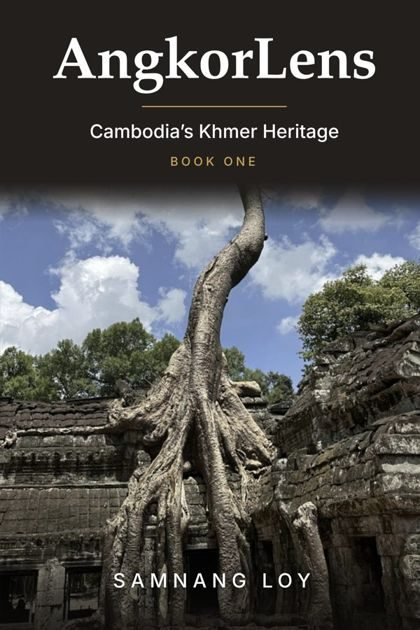
Book One
ប្រាសាទខ្មែរ 41 ពីអង្គរវត្ត ដល់កោះកេរ និងព្រះវិហារ
41 Khmer temples, from Angkor Wat, Ta Prohm, the Bayon and Banteay Srei to Koh Ker and Preah Vihear — with the author’s own photographs, a temple map and an index.
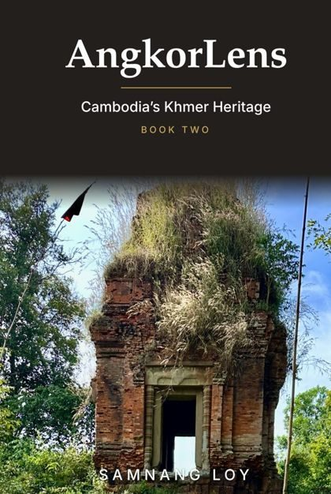
Book Two
ប្រាសាទ 37 បន្ថែម ដែលមនុស្សកម្រទៅដល់
37 more temples, many rarely visited and seldom photographed — forest sanctuaries north of Phnom Kulen, the old royal road, and brick towers near the Mekong.
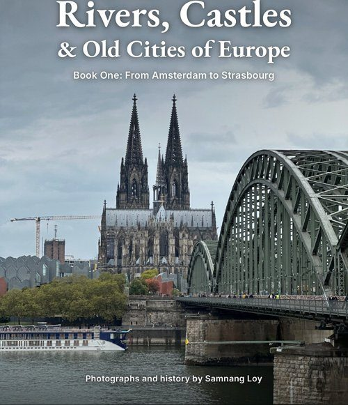
Book One · From Amsterdam to Strasbourg
ទន្លេ ប្រាសាទ និងទីក្រុងចាស់ៗនៃអឺរ៉ុប — ភាគ ១
A photo journey along Europe’s rivers, from the canals of Amsterdam past Cologne Cathedral to the old city of Strasbourg.
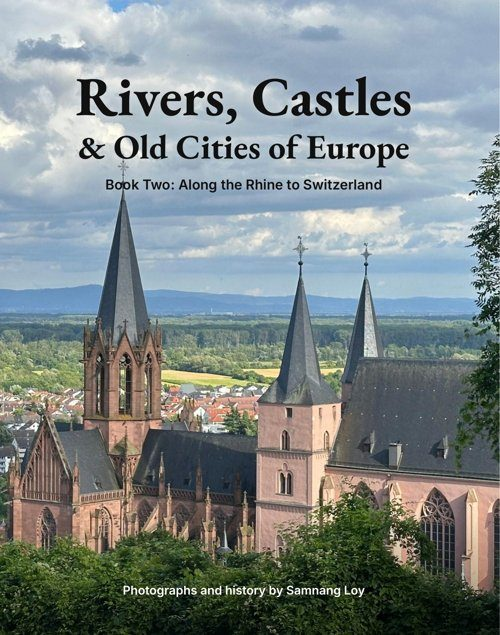
Book Two · Along the Rhine to Switzerland
ទន្លេ ប្រាសាទ និងទីក្រុងចាស់ៗនៃអឺរ៉ុប — ភាគ ២
The journey continues up the Rhine — castles, cathedrals and old towns all the way to Switzerland.
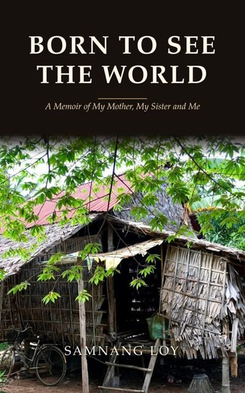
A Memoir of My Mother, My Sister and Me
អនុស្សាវរីយ៍អំពីម្ដាយ បងស្រី និងខ្ញុំ
A family memoir that begins in a wooden house in Cambodia and follows one boy’s long journey out into the world.
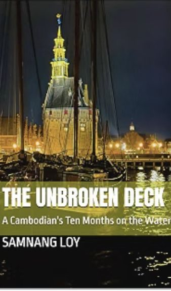
A Cambodian’s Ten Months on the Water
ដប់ខែលើទឹករបស់ខ្មែរម្នាក់
The true story of a young Cambodian working ten months on Europe’s rivers — long days, new friends, and cities seen from the deck.
As an independent author, every copy you buy helps me keep photographing and documenting Khmer heritage. Thank you! · សូមអរគុណ
Museum collection
សារមន្ទីរ ដែលខ្ញុំបានថតរូប
All the museums I have photographed, in Cambodia and in San Francisco, in one place. Tap a museum to open its photos and guide.
Asian Art Museum · San Francisco
សិល្បៈខ្មែរ នៅសាន់ហ្វ្រាន់ស៊ីស្កូ
Far from Angkor, a room of Khmer sculpture waits in San Francisco. I photographed these works at the Asian Art Museum. Tap any artwork to open its photo story and read about it. Free to view.
Tap a photo to open its story · ចុចលើរូប ដើម្បីអានរឿង
Artworks are in the collection of, or on loan to, the Asian Art Museum of San Francisco. Photographs by Samnang Loy, shared for education. Facts come from the museum's own records where noted; anything not yet confirmed is marked "Details to be confirmed."
My photos · San Francisco
សាន់ហ្វ្រាន់ស៊ីស្កូ តាមកែវថតរបស់ខ្ញុំ
Tap a photo to open its story · ចុចលើរូប ដើម្បីអានរឿង
Book a guided trip · Siem Reap, Cambodia
ដំណើរកម្សាន្ត សៀមរាប
Travel with a local Cambodian guide born in Siem Reap. All tours include private A/C transport and multi-language guide options. Choose a tour, send a booking request, and I will reply to confirm the date and arrange payment.
Meet your host
I was born in Siem Reap. I am the author and photographer of the AngkorLens books, and the temple photos in my books and galleries are my own.
Your tour is guided by a licensed local guide in Siem Reap whom I know and trust. Send me your booking and I will personally arrange everything for you.
A classic route for first-time visitors. Usually planned as a full-day visit.
A route around the wider Angkor area, often paired with a full day of sightseeing.
Some tour photos are from Wikimedia Commons, used under the free licenses shown on each photo (tap the credit to see the original). Other photos © Samnang Loy.
Plan your trip
មគ្គុទ្ទេសក៍ធ្វើដំណើរ សៀមរាប
Simple, practical advice from a Siem Reap local: how to get your temple ticket, when to come, and how to spend three days.
Updated November 2026
To visit Angkor Wat and the temples of Angkor Archaeological Park you need an Angkor Pass. Here is everything you need to know.
| Pass | Price | How to use it |
|---|---|---|
| 1 day | $37 | Valid on the date printed on the ticket |
| 3 days | $62 | Any 3 days within 7 days |
| 7 days | $72 | Any 7 days within 30 days |
Children under 12 enter free (bring their passport to show their age). The 3-day and 7-day passes include your photo.
Sources: Hello Angkor (Feb 2026) · Adventures Cambodia (Aug 2026)
Siem Reap is warm all year, but the seasons change your trip a lot. Here is what to expect.
The most popular time. Blue skies, cooler mornings and little rain. It is the busiest season, so arrive early at famous temples like Angkor Wat and Ta Prohm.
Very hot, especially in April and May. Visit temples early in the morning, rest at midday, and go out again in the late afternoon. Fewer visitors. Khmer New Year falls in mid-April.
Rain usually comes in short afternoon showers. The forests are green, the moats are full, the temples are quiet, and hotels are cheaper. Bring a light rain jacket and good shoes for wet stones.
The lake rises in the rainy season and falls in the dry season. When the water is high, boat trips through the flooded forest are at their best. When the water is low, you see the full height of the stilted houses. Ask me which is better for your dates.
A relaxed plan for first-time visitors. A 3-day Angkor Pass ($62) covers days 1 and 2 and Banteay Srei.
Guest reviews
I am just starting my guided tours. Reviews from real guests will appear here after their trips. If you have travelled with me or read my books, I would love to hear from you.
មតិរបស់ភ្ញៀវពិតប្រាកដ នឹងបង្ហាញនៅទីនេះ។
Subscribe to AngkorLens with your Google Account
Google Account sign-in will be connected after a Google OAuth client ID is configured.